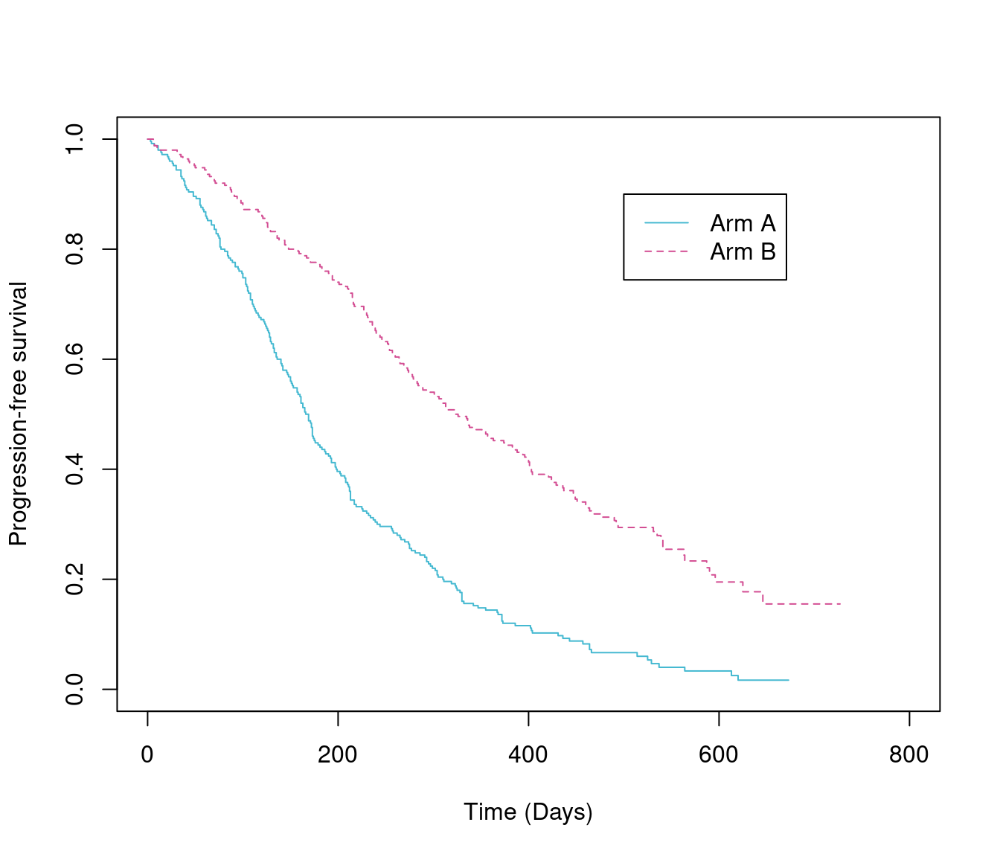
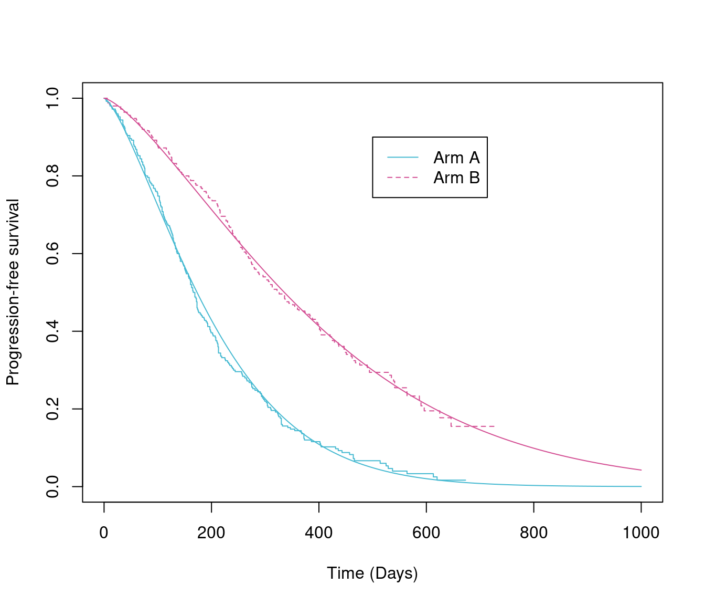

Fitting parametric survival models in R
Roche
2021-01-06
Fitting_models_in_R.RmdIntroduction
Parametric survival models are often the preferred method of extrapolating survival data for use in economic models. The National Institute for Health and Care Excellence (NICE) Decision Support Unit (DSU) technical support document (TSD) 14 recommends that the Exponential, Weibull, Gompertz, log-logistic, log normal and Generalized Gamma parametric models should all be considered.[1] More recently, NICE also discusses more flexible models in NICE DSU TSD 21, however, more these models are not in the scope of this package.[2] The Canadian Agency for Drugs and Technologies in Health (CADTH) additionally specifies that the Gamma distribution must also be considered. This document therefore details the characteristics of each of these distributions and demonstrates how the parameters from each distribution, outputted using the flexsurvPlus package, can be implemented within an economic model.[3]
The flexsurvPlus package allows the inclusion of a treatment effect in the following three ways:
Separate models - Models fitted to each treatment arm separately
Independent shape models - Models fitted to both/all treatment arms including a treatment covariate to model the effect of treatment on both the scale and shape parameter(s) of the distribution.
Common shape models - Models fitted to both/all treatment arms including a treatment covariate to model the effect of treatment on the scale parameter of the distribution. The shape parameter(s) of the distribution is common across treatments which reflects an assumption of proportional hazards or accelerated failure time between treatments depending on the distribution
This document details how to use the flexsurvPlus package to perform these models. A separate vignette; “Parametric survival analysis using the flexsurvPlus package: understanding the theory” details the theory behind the models.
Set up packages and data
Install packages
The following packages are required to run this example:
library(flexsurvPlus) library(tibble) library(dplyr) #> #> Attaching package: 'dplyr' #> The following objects are masked from 'package:stats': #> #> filter, lag #> The following objects are masked from 'package:base': #> #> intersect, setdiff, setequal, union library(survival) library(survminer) #> Loading required package: ggplot2 #> Loading required package: ggpubr library(tidyr) library(boot) #> #> Attaching package: 'boot' #> The following object is masked from 'package:survival': #> #> aml blue = rgb(69, 185, 209, max=255) red = rgb(225, 55, 60, max=255) yellow = rgb(238, 224, 30, max=255) pink = rgb(211,78,147,max=255) Dblue = rgb(0,45,92,max=255) Dyellow = rgb(214, 200, 16, max=255) green = rgb(0,1,0) Dyellow = rgb(214, 200, 16, max=255) black<-rgb(0,0,0,max=255) grey1<-rgb(0,0,0,max=30) grey2<-rgb(10,10,10,max=30) grey3<-rgb(20,20,20,max=30) grey3_dup<-rgb(19,20,20,max=30) lightPink<-rgb(229,151,192,max=255) orange<-rgb(247,139,21,max=255)
Read in the data
To perform survival analyses, patient level data is required for the survival endpoints.
This example uses a standard simulated data set (adtte). There is no standard naming that is needed for this package however, there are some set variables that are needed:
- Time - a numeric variable
- Event - a binary variable (event=1, censor=0)
- Treatment - a character variable with the name of the intervention treatment
The data must be in “wide” format such that there is one row per patient and columns for each endpoint separately. In this example, we use progression-free survival (PFS).
Exploratory analysis
Before performing any statistical analysis, it is important to explore the data.
Most importantly is a Kaplan-Meier plot and code to do this using ggsurvplot is presented below.
km.est.PFS <- survfit(Surv(PFS_days, PFS_event) ~ ARMCD , data = PFS_data, conf.type = 'plain') #KM_list <- list(OS = km.est.OS, PFS = km.est.PFS) KM_plot_PFS <- ggsurvplot(km.est.PFS, risk.table = TRUE, data = PFS_data, break.time.by = 200, conf.int = FALSE, censor=FALSE, legend.title = '', xlab = paste0('Progression-free survival (Days)'), size = 0.72, xlim = c(0, 800)) KM_plot_PFS

Fitting the models
The runPSM function fits parametric survival models for multiple distributions using the flexsurv package (using the flexsurvPlus function fit_models), manipulates the flexsurv objects to get the parameter estimates and AIC and BIC value (using the flexsurvPlus function get_params) and rearranges the parameter estimates such that they can easily be output to excel to calculate survival for both the intervention and reference treatment in an economic model.
These functions can be used to estimate 3 types of model:
Separate models - Models fitted to each treatment arm separately
Independent shape models - Models fitted to both/all treatment arms including a treatment covariate to model the effect of treatment on both the scale and shape parameter(s) of the distribution.
Common shape models - Models fitted to both/all treatment arms including a treatment covariate to model the effect of treatment on the scale parameter of the distribution. The shape parameter(s) of the distribution is common across treatments which reflects an assumption of proportional hazards or accelerated failure time between treatments depending on the distribution
Each type of model can be fitted with a multiple distributions. The distributions available for this package are: * Exponential (‘exp’) * Weibull (‘weibull’) * Gompertz (‘gompertz’) * Log-normal (‘lnorm’) * Log-logistic (‘llogis’) * Generalized gamma (‘gengamma’) * Gamma (‘gamma’)
For more information on the different types of models, please see the survival analysis theory vignette included in the flexsurvPlus package.
The inputs to the runPSM function are: data - A data frame containing individual patient data for the relevant time to event outcomes time_var - Name of time variable in ‘data’. Variable must be numerical and >0. event_var - Name of event variable in ‘data’. Variable must be numerical and contain 1’s to indicate an event and 0 to indicate a censor. model.type - Character vector indicating the types of model formula provided. Permitted values are ‘Common shape’, ‘Independent shape’ or ‘Separate’ as per the models explained above. strata_var - Name of stratification variable in “data”. This is usually the treatment variable and must be categorical. int_name - Character to indicate the name of the treatment of interest, must be a level of the “strata_var” column in “data”, used for labelling the parameters. *ref_name - Character to indicate the name of the reference treatment, must be a level of the “strata_var” column in “data”, used for labelling the parameters.
More information about each function can be used by running the code ?runPSM.
Example code to fit all models is presented below.
psm_PFS_all <- runPSM(data=PFS_data, time_var="PFS_days", event_var="PFS_event", model.type= c("Common shape", "Independent shape", "Separate"), distr = c('exp', 'weibull', 'gompertz', 'lnorm', 'llogis', 'gengamma', 'gamma'), strata_var = "ARMCD", int_name="A", ref_name = "B") psm_PFS_all #> $models #> $models$comshp.exp #> Call: #> flexsurv::flexsurvreg(formula = model.formula, data = data, dist = dist) #> #> Estimates: #> data mean est L95% U95% se exp(est) L95% #> rate NA 0.002210 0.001911 0.002557 0.000164 NA NA #> ARMInt 0.500000 0.767591 0.574293 0.960889 0.098623 2.154570 1.775875 #> U95% #> rate NA #> ARMInt 2.614019 #> #> N = 500, Events: 419, Censored: 81 #> Total time at risk: 131862 #> Log-likelihood = -2798.33, df = 2 #> AIC = 5600.66 #> #> #> $models$comshp.weibull #> Call: #> flexsurv::flexsurvreg(formula = model.formula, data = data, dist = dist) #> #> Estimates: #> data mean est L95% U95% se exp(est) L95% #> shape NA 1.3881 1.2830 1.5017 0.0557 NA NA #> scale NA 437.0600 393.4819 485.4643 23.4223 NA NA #> ARMInt 0.5000 -0.6623 -0.8035 -0.5211 0.0721 0.5157 0.4477 #> U95% #> shape NA #> scale NA #> ARMInt 0.5939 #> #> N = 500, Events: 419, Censored: 81 #> Total time at risk: 131862 #> Log-likelihood = -2769.611, df = 3 #> AIC = 5545.222 #> #> #> $models$comshp.gompertz #> Call: #> flexsurv::flexsurvreg(formula = model.formula, data = data, dist = dist) #> #> Estimates: #> data mean est L95% U95% se exp(est) L95% #> shape NA 0.002072 0.001455 0.002688 0.000315 NA NA #> rate NA 0.001358 0.001091 0.001690 0.000152 NA NA #> ARMInt 0.500000 0.911755 0.712472 1.111039 0.101677 2.488687 2.039025 #> U95% #> shape NA #> rate NA #> ARMInt 3.037512 #> #> N = 500, Events: 419, Censored: 81 #> Total time at risk: 131862 #> Log-likelihood = -2779.001, df = 3 #> AIC = 5564.003 #> #> #> $models$comshp.lnorm #> Call: #> flexsurv::flexsurvreg(formula = model.formula, data = data, dist = dist) #> #> Estimates: #> data mean est L95% U95% se exp(est) L95% #> meanlog NA 5.7350 5.6068 5.8632 0.0654 NA NA #> sdlog NA 0.9863 0.9199 1.0575 0.0351 NA NA #> ARMInt 0.5000 -0.7128 -0.8901 -0.5355 0.0905 0.4903 0.4106 #> U95% #> meanlog NA #> sdlog NA #> ARMInt 0.5854 #> #> N = 500, Events: 419, Censored: 81 #> Total time at risk: 131862 #> Log-likelihood = -2800.225, df = 3 #> AIC = 5606.451 #> #> #> $models$comshp.llogis #> Call: #> flexsurv::flexsurvreg(formula = model.formula, data = data, dist = dist) #> #> Estimates: #> data mean est L95% U95% se exp(est) L95% #> shape NA 1.9062 1.7573 2.0676 0.0791 NA NA #> scale NA 323.1928 288.2447 362.3782 18.8707 NA NA #> ARMInt 0.5000 -0.6975 -0.8565 -0.5384 0.0812 0.4978 0.4246 #> U95% #> shape NA #> scale NA #> ARMInt 0.5837 #> #> N = 500, Events: 419, Censored: 81 #> Total time at risk: 131862 #> Log-likelihood = -2780.256, df = 3 #> AIC = 5566.512 #> #> #> $models$comshp.gengamma #> Call: #> flexsurv::flexsurvreg(formula = model.formula, data = data, dist = dist) #> #> Estimates: #> data mean est L95% U95% se exp(est) L95% #> mu NA 6.0574 5.9291 6.1857 0.0654 NA NA #> sigma NA 0.7377 0.6624 0.8215 0.0405 NA NA #> Q NA 0.9195 0.6682 1.1708 0.1282 NA NA #> ARMInt 0.5000 -0.6699 -0.8149 -0.5249 0.0740 0.5118 0.4427 #> U95% #> mu NA #> sigma NA #> Q NA #> ARMInt 0.5916 #> #> N = 500, Events: 419, Censored: 81 #> Total time at risk: 131862 #> Log-likelihood = -2769.421, df = 4 #> AIC = 5546.841 #> #> #> $models$comshp.gamma #> Call: #> flexsurv::flexsurvreg(formula = model.formula, data = data, dist = dist) #> #> Estimates: #> data mean est L95% U95% se exp(est) L95% #> shape NA 1.658113 1.465091 1.876566 0.104702 NA NA #> rate NA 0.004046 0.003377 0.004846 0.000373 NA NA #> ARMInt 0.500000 0.684825 0.537124 0.832527 0.075359 1.983426 1.711078 #> U95% #> shape NA #> rate NA #> ARMInt 2.299122 #> #> N = 500, Events: 419, Censored: 81 #> Total time at risk: 131862 #> Log-likelihood = -2770.102, df = 3 #> AIC = 5546.203 #> #> #> $models$sep.int.exp #> Call: #> flexsurv::flexsurvreg(formula = model.formula, data = data, dist = dist) #> #> Estimates: #> est L95% U95% se #> rate 0.004762 0.004194 0.005408 0.000309 #> #> N = 250, Events: 238, Censored: 12 #> Total time at risk: 49975 #> Log-likelihood = -1510.588, df = 1 #> AIC = 3023.176 #> #> #> $models$sep.int.weibull #> Call: #> flexsurv::flexsurvreg(formula = model.formula, data = data, dist = dist) #> #> Estimates: #> est L95% U95% se #> shape 1.3841 1.2516 1.5306 0.0711 #> scale 225.2128 204.7892 247.6732 10.9235 #> #> N = 250, Events: 238, Censored: 12 #> Total time at risk: 49975 #> Log-likelihood = -1493.471, df = 2 #> AIC = 2990.943 #> #> #> $models$sep.int.gompertz #> Call: #> flexsurv::flexsurvreg(formula = model.formula, data = data, dist = dist) #> #> Estimates: #> est L95% U95% se #> shape 0.002126 0.001252 0.003000 0.000446 #> rate 0.003345 0.002719 0.004116 0.000354 #> #> N = 250, Events: 238, Censored: 12 #> Total time at risk: 49975 #> Log-likelihood = -1500.61, df = 2 #> AIC = 3005.22 #> #> #> $models$sep.int.lnorm #> Call: #> flexsurv::flexsurvreg(formula = model.formula, data = data, dist = dist) #> #> Estimates: #> est L95% U95% se #> meanlog 5.0201 4.9049 5.1352 0.0587 #> sdlog 0.9245 0.8442 1.0124 0.0428 #> #> N = 250, Events: 238, Censored: 12 #> Total time at risk: 49975 #> Log-likelihood = -1508.722, df = 2 #> AIC = 3021.443 #> #> #> $models$sep.int.llogis #> Call: #> flexsurv::flexsurvreg(formula = model.formula, data = data, dist = dist) #> #> Estimates: #> est L95% U95% se #> shape 2.02 1.81 2.24 0.11 #> scale 161.22 145.05 179.19 8.69 #> #> N = 250, Events: 238, Censored: 12 #> Total time at risk: 49975 #> Log-likelihood = -1499.366, df = 2 #> AIC = 3002.733 #> #> #> $models$sep.int.gengamma #> Call: #> flexsurv::flexsurvreg(formula = model.formula, data = data, dist = dist) #> #> Estimates: #> est L95% U95% se #> mu 5.3572 5.2058 5.5086 0.0772 #> sigma 0.7496 0.6635 0.8469 0.0467 #> Q 0.8349 0.5197 1.1501 0.1608 #> #> N = 250, Events: 238, Censored: 12 #> Total time at risk: 49975 #> Log-likelihood = -1492.975, df = 3 #> AIC = 2991.95 #> #> #> $models$sep.int.gamma #> Call: #> flexsurv::flexsurvreg(formula = model.formula, data = data, dist = dist) #> #> Estimates: #> est L95% U95% se #> shape 1.708525 1.447974 2.015960 0.144238 #> rate 0.008273 0.006806 0.010057 0.000824 #> #> N = 250, Events: 238, Censored: 12 #> Total time at risk: 49975 #> Log-likelihood = -1493.076, df = 2 #> AIC = 2990.152 #> #> #> $models$sep.ref.exp #> Call: #> flexsurv::flexsurvreg(formula = model.formula, data = data, dist = dist) #> #> Estimates: #> est L95% U95% se #> rate 0.002210 0.001911 0.002557 0.000164 #> #> N = 250, Events: 181, Censored: 69 #> Total time at risk: 81887 #> Log-likelihood = -1287.742, df = 1 #> AIC = 2577.485 #> #> #> $models$sep.ref.weibull #> Call: #> flexsurv::flexsurvreg(formula = model.formula, data = data, dist = dist) #> #> Estimates: #> est L95% U95% se #> shape 1.3944 1.2290 1.5821 0.0898 #> scale 436.9567 393.5292 485.1766 23.3372 #> #> N = 250, Events: 181, Censored: 69 #> Total time at risk: 81887 #> Log-likelihood = -1276.135, df = 2 #> AIC = 2556.271 #> #> #> $models$sep.ref.gompertz #> Call: #> flexsurv::flexsurvreg(formula = model.formula, data = data, dist = dist) #> #> Estimates: #> est L95% U95% se #> shape 0.002018 0.001149 0.002887 0.000443 #> rate 0.001377 0.001050 0.001807 0.000191 #> #> N = 250, Events: 181, Censored: 69 #> Total time at risk: 81887 #> Log-likelihood = -1278.377, df = 2 #> AIC = 2560.755 #> #> #> $models$sep.ref.lnorm #> Call: #> flexsurv::flexsurvreg(formula = model.formula, data = data, dist = dist) #> #> Estimates: #> est L95% U95% se #> meanlog 5.7541 5.6135 5.8946 0.0717 #> sdlog 1.0684 0.9587 1.1907 0.0591 #> #> N = 250, Events: 181, Censored: 69 #> Total time at risk: 81887 #> Log-likelihood = -1289.469, df = 2 #> AIC = 2582.939 #> #> #> $models$sep.ref.llogis #> Call: #> flexsurv::flexsurvreg(formula = model.formula, data = data, dist = dist) #> #> Estimates: #> est L95% U95% se #> shape 1.775 1.566 2.012 0.113 #> scale 324.711 287.502 366.736 20.163 #> #> N = 250, Events: 181, Censored: 69 #> Total time at risk: 81887 #> Log-likelihood = -1279.735, df = 2 #> AIC = 2563.469 #> #> #> $models$sep.ref.gengamma #> Call: #> flexsurv::flexsurvreg(formula = model.formula, data = data, dist = dist) #> #> Estimates: #> est L95% U95% se #> mu 6.1015 5.9352 6.2679 0.0849 #> sigma 0.6938 0.5462 0.8814 0.0847 #> Q 1.0810 0.5839 1.5782 0.2537 #> #> N = 250, Events: 181, Censored: 69 #> Total time at risk: 81887 #> Log-likelihood = -1276.081, df = 3 #> AIC = 2558.162 #> #> #> $models$sep.ref.gamma #> Call: #> flexsurv::flexsurvreg(formula = model.formula, data = data, dist = dist) #> #> Estimates: #> est L95% U95% se #> shape 1.596692 1.325325 1.923622 0.151750 #> rate 0.003872 0.003033 0.004943 0.000482 #> #> N = 250, Events: 181, Censored: 69 #> Total time at risk: 81887 #> Log-likelihood = -1276.884, df = 2 #> AIC = 2557.768 #> #> #> $models$indshp.exp #> Call: #> flexsurv::flexsurvreg(formula = model.formula, data = data, dist = dist) #> #> Estimates: #> data mean est L95% U95% se exp(est) L95% #> rate NA 0.002210 0.001911 0.002557 0.000164 NA NA #> ARMInt 0.500000 0.767591 0.574293 0.960889 0.098623 2.154570 1.775875 #> U95% #> rate NA #> ARMInt 2.614019 #> #> N = 500, Events: 419, Censored: 81 #> Total time at risk: 131862 #> Log-likelihood = -2798.33, df = 2 #> AIC = 5600.66 #> #> #> $models$indshp.weibull #> Call: #> flexsurv::flexsurvreg(formula = model.formula, data = data, dist = dist) #> #> Estimates: #> data mean est L95% U95% se exp(est) #> shape NA 1.39439 1.22897 1.58208 0.08984 NA #> scale NA 436.95667 393.52916 485.17658 23.33723 NA #> ARMInt 0.50000 -0.66279 -0.80419 -0.52138 0.07215 0.51541 #> shape(ARMInt) 0.50000 -0.00742 -0.16889 0.15406 0.08239 0.99261 #> L95% U95% #> shape NA NA #> scale NA NA #> ARMInt 0.44745 0.59370 #> shape(ARMInt) 0.84460 1.16656 #> #> N = 500, Events: 419, Censored: 81 #> Total time at risk: 131862 #> Log-likelihood = -2769.607, df = 4 #> AIC = 5547.214 #> #> #> $models$indshp.gompertz #> Call: #> flexsurv::flexsurvreg(formula = model.formula, data = data, dist = dist) #> #> Estimates: #> data mean est L95% U95% se exp(est) #> shape NA 0.002018 0.001148 0.002887 0.000443 NA #> rate NA 0.001377 0.001050 0.001807 0.000191 NA #> ARMInt 0.500000 0.887593 0.545992 1.229194 0.174289 2.429276 #> shape(ARMInt) 0.500000 0.000108 -0.001124 0.001341 0.000629 1.000108 #> L95% U95% #> shape NA NA #> rate NA NA #> ARMInt 1.726320 3.418474 #> shape(ARMInt) 0.998877 1.001342 #> #> N = 500, Events: 419, Censored: 81 #> Total time at risk: 131862 #> Log-likelihood = -2778.987, df = 4 #> AIC = 5565.974 #> #> #> $models$indshp.llogis #> Call: #> flexsurv::flexsurvreg(formula = model.formula, data = data, dist = dist) #> #> Estimates: #> data mean est L95% U95% se exp(est) #> shape NA 1.7752 1.5662 2.0121 0.1134 NA #> scale NA 324.7128 287.5038 366.7375 20.1633 NA #> ARMInt 0.5000 -0.7002 -0.8614 -0.5390 0.0822 0.4965 #> shape(ARMInt) 0.5000 0.1272 -0.0375 0.2919 0.0840 1.1357 #> L95% U95% #> shape NA NA #> scale NA NA #> ARMInt 0.4226 0.5833 #> shape(ARMInt) 0.9632 1.3390 #> #> N = 500, Events: 419, Censored: 81 #> Total time at risk: 131862 #> Log-likelihood = -2779.101, df = 4 #> AIC = 5566.202 #> #> #> $models$indshp.gamma #> Call: #> flexsurv::flexsurvreg(formula = model.formula, data = data, dist = dist) #> #> Estimates: #> data mean est L95% U95% se exp(est) #> shape NA 1.596555 1.325203 1.923470 0.151743 NA #> rate NA 0.003871 0.003032 0.004942 0.000482 NA #> ARMInt 0.500000 0.759334 0.446665 1.072003 0.159528 2.136853 #> shape(ARMInt) 0.500000 0.067700 -0.181462 0.316863 0.127126 1.070045 #> L95% U95% #> shape NA NA #> rate NA NA #> ARMInt 1.563091 2.921226 #> shape(ARMInt) 0.834050 1.372814 #> #> N = 500, Events: 419, Censored: 81 #> Total time at risk: 131862 #> Log-likelihood = -2769.96, df = 4 #> AIC = 5547.919 #> #> #> $models$indshp.lnorm #> Call: #> flexsurv::flexsurvreg(formula = model.formula, data = data, dist = dist) #> #> Estimates: #> data mean est L95% U95% se exp(est) #> meanlog NA 5.75408 5.61352 5.89464 0.07172 NA #> sdlog NA 1.06842 0.95866 1.19074 0.05909 NA #> ARMInt 0.50000 -0.73401 -0.91570 -0.55232 0.09270 0.47998 #> sdlog(ARMInt) 0.50000 -0.14466 -0.28608 -0.00323 0.07216 0.86532 #> L95% U95% #> meanlog NA NA #> sdlog NA NA #> ARMInt 0.40024 0.57561 #> sdlog(ARMInt) 0.75120 0.99678 #> #> N = 500, Events: 419, Censored: 81 #> Total time at risk: 131862 #> Log-likelihood = -2798.191, df = 4 #> AIC = 5604.382 #> #> #> $models$indshp.gengamma #> Call: #> flexsurv::flexsurvreg(formula = model.formula, data = data, dist = dist) #> #> Estimates: #> data mean est L95% U95% se exp(est) L95% #> mu NA 6.1016 5.9352 6.2680 0.0849 NA NA #> sigma NA 0.6938 0.5461 0.8814 0.0847 NA NA #> Q NA 1.0814 0.5840 1.5788 0.2538 NA NA #> ARMInt 0.5000 -0.7444 -0.9693 -0.5194 0.1148 0.4750 0.3794 #> sigma(ARMInt) 0.5000 0.0773 -0.1913 0.3460 0.1371 1.0804 0.8258 #> Q(ARMInt) 0.5000 -0.2465 -0.8353 0.3423 0.3004 0.7816 0.4338 #> U95% #> mu NA #> sigma NA #> Q NA #> ARMInt 0.5949 #> sigma(ARMInt) 1.4134 #> Q(ARMInt) 1.4082 #> #> N = 500, Events: 419, Censored: 81 #> Total time at risk: 131862 #> Log-likelihood = -2769.056, df = 6 #> AIC = 5550.112 #> #> #> #> $model_summary #> # A tibble: 28 x 5 #> name value coef AIC BIC #> <chr> <list> <named list> <dbl> <dbl> #> 1 comshp.exp <flxsrvrg> <dbl [2]> 5601. 5609. #> 2 comshp.weibull <flxsrvrg> <dbl [3]> 5545. 5558. #> 3 comshp.gompertz <flxsrvrg> <dbl [3]> 5564. 5577. #> 4 comshp.lnorm <flxsrvrg> <dbl [3]> 5606. 5619. #> 5 comshp.llogis <flxsrvrg> <dbl [3]> 5567. 5579. #> 6 comshp.gengamma <flxsrvrg> <dbl [4]> 5547. 5564. #> 7 comshp.gamma <flxsrvrg> <dbl [3]> 5546. 5559. #> 8 sep.int.exp <flxsrvrg> <dbl [1]> 3023. 3027. #> 9 sep.int.weibull <flxsrvrg> <dbl [2]> 2991. 2998. #> 10 sep.int.gompertz <flxsrvrg> <dbl [2]> 3005. 3012. #> # … with 18 more rows #> #> $parameters #> exp.rate.int exp.rate.ref exp.rate.TE weibull.scale.int weibull.scale.ref #> 1 0.004762381 0.002210363 0.767591 225.3719 437.0600 #> 2 0.004762381 0.002210363 NA 225.2128 436.9567 #> 3 0.004762381 0.002210363 0.767591 225.2128 436.9567 #> weibull.shape.int weibull.shape.ref weibull.scale.TE gompertz.rate.int #> 1 1.38807 1.388070 -0.6623183 0.003378992 #> 2 1.38409 1.394392 NA 0.003345261 #> 3 1.38409 1.394392 -0.6627884 0.003345363 #> gompertz.rate.ref gompertz.shape.int gompertz.shape.ref gompertz.rate.TE #> 1 0.001357741 0.002071791 0.002071791 0.9117552 #> 2 0.001377019 0.002126025 0.002017723 NA #> 3 0.001377103 0.002125949 0.002017541 0.8875933 #> llogis.scale.int llogis.scale.ref llogis.shape.int llogis.shape.ref #> 1 160.9001 323.1928 1.906172 1.906172 #> 2 161.2189 324.7112 2.016085 1.775194 #> 3 161.2182 324.7128 2.016077 1.775211 #> llogis.scale.TE gamma.rate.int gamma.rate.ref gamma.shape.int gamma.shape.ref #> 1 -0.6974655 0.008024506 0.004045781 1.658113 1.658113 #> 2 NA 0.008273127 0.003871635 1.708525 1.596692 #> 3 -0.7001824 0.008272142 0.003871179 1.708385 1.596555 #> gamma.rate.TE lnorm.meanlog.int lnorm.meanlog.ref lnorm.sdlog.int #> 1 0.6848254 5.022173 5.734996 0.9862778 #> 2 NA 5.020074 5.754086 0.9245221 #> 3 0.7593344 5.020074 5.754082 0.9245219 #> lnorm.sdlog.ref lnorm.meanlog.TE gengamma.mu.int gengamma.mu.ref #> 1 0.9862778 -0.712823 5.387505 6.057406 #> 2 1.0684160 NA 5.357216 6.101537 #> 3 1.0684160 -0.734008 5.357237 6.101598 #> gengamma.sigma.int gengamma.sigma.ref gengamma.Q.int gengamma.Q.ref #> 1 0.7376519 0.7376519 0.9194986 0.9194986 #> 2 0.7495726 0.6938119 0.8349065 1.0810414 #> 3 0.7495580 0.6937829 0.8349304 1.0813996 #> gengamma.mu.TE Model Intervention_name Reference_name #> 1 -0.6699007 Common shape A B #> 2 NA Seperate A B #> 3 -0.7443610 Independent shape A B #> weibull.shape.TE gompertz.shape.TE llogis.shape.TE gamma.shape.TE #> 1 NA NA NA NA #> 2 NA NA NA NA #> 3 -0.007415373 0.0001084078 0.127234 0.0677004 #> lnorm.sdlog.TE gengamma.sigma.TE gengamma.Q.TE #> 1 NA NA NA #> 2 NA NA NA #> 3 -0.1446557 0.07732464 -0.2464692 #> #> $parameters_vector #> comshp.exp.rate.int comshp.exp.rate.ref comshp.exp.rate.TE #> 4.762381e-03 2.210363e-03 7.675910e-01 #> comshp.weibull.scale.int comshp.weibull.scale.ref comshp.weibull.shape.int #> 2.253719e+02 4.370600e+02 1.388070e+00 #> comshp.weibull.shape.ref comshp.weibull.scale.TE comshp.gompertz.rate.int #> 1.388070e+00 -6.623183e-01 3.378992e-03 #> comshp.gompertz.rate.ref comshp.gompertz.shape.int comshp.gompertz.shape.ref #> 1.357741e-03 2.071791e-03 2.071791e-03 #> comshp.gompertz.rate.TE comshp.llogis.scale.int comshp.llogis.scale.ref #> 9.117552e-01 1.609001e+02 3.231928e+02 #> comshp.llogis.shape.int comshp.llogis.shape.ref comshp.llogis.scale.TE #> 1.906172e+00 1.906172e+00 -6.974655e-01 #> comshp.gamma.rate.int comshp.gamma.rate.ref comshp.gamma.shape.int #> 8.024506e-03 4.045781e-03 1.658113e+00 #> comshp.gamma.shape.ref comshp.gamma.rate.TE comshp.lnorm.meanlog.int #> 1.658113e+00 6.848254e-01 5.022173e+00 #> comshp.lnorm.meanlog.ref comshp.lnorm.sdlog.int comshp.lnorm.sdlog.ref #> 5.734996e+00 9.862778e-01 9.862778e-01 #> comshp.lnorm.meanlog.TE comshp.gengamma.mu.int comshp.gengamma.mu.ref #> -7.128230e-01 5.387505e+00 6.057406e+00 #> comshp.gengamma.sigma.int comshp.gengamma.sigma.ref comshp.gengamma.Q.int #> 7.376519e-01 7.376519e-01 9.194986e-01 #> comshp.gengamma.Q.ref comshp.gengamma.mu.TE sep.exp.rate.int #> 9.194986e-01 -6.699007e-01 4.762381e-03 #> sep.weibull.shape.int sep.weibull.scale.int sep.gompertz.shape.int #> 1.384090e+00 2.252128e+02 2.126025e-03 #> sep.gompertz.rate.int sep.lnorm.meanlog.int sep.lnorm.sdlog.int #> 3.345261e-03 5.020074e+00 9.245221e-01 #> sep.llogis.shape.int sep.llogis.scale.int sep.gengamma.mu.int #> 2.016085e+00 1.612189e+02 5.357216e+00 #> sep.gengamma.sigma.int sep.gengamma.Q.int sep.gamma.shape.int #> 7.495726e-01 8.349065e-01 1.708525e+00 #> sep.gamma.rate.int sep.exp.rate.ref sep.weibull.shape.ref #> 8.273127e-03 2.210363e-03 1.394392e+00 #> sep.weibull.scale.ref sep.gompertz.shape.ref sep.gompertz.rate.ref #> 4.369567e+02 2.017723e-03 1.377019e-03 #> sep.lnorm.meanlog.ref sep.lnorm.sdlog.ref sep.llogis.shape.ref #> 5.754086e+00 1.068416e+00 1.775194e+00 #> sep.llogis.scale.ref sep.gengamma.mu.ref sep.gengamma.sigma.ref #> 3.247112e+02 6.101537e+00 6.938119e-01 #> sep.gengamma.Q.ref sep.gamma.shape.ref sep.gamma.rate.ref #> 1.081041e+00 1.596692e+00 3.871635e-03 #> indshp.exp.rate.int indshp.exp.rate.ref indshp.exp.rate.TE #> 4.762381e-03 2.210363e-03 7.675910e-01 #> indshp.weibull.scale.int indshp.weibull.scale.ref indshp.weibull.shape.int #> 2.252128e+02 4.369567e+02 1.384090e+00 #> indshp.weibull.shape.ref indshp.weibull.scale.TE indshp.weibull.shape.TE #> 1.394392e+00 -6.627884e-01 -7.415373e-03 #> indshp.gompertz.rate.int indshp.gompertz.rate.ref indshp.gompertz.shape.int #> 3.345363e-03 1.377103e-03 2.125949e-03 #> indshp.gompertz.shape.ref indshp.gompertz.rate.TE indshp.gompertz.shape.TE #> 2.017541e-03 8.875933e-01 1.084078e-04 #> indshp.llogis.scale.int indshp.llogis.scale.ref indshp.llogis.shape.int #> 1.612182e+02 3.247128e+02 2.016077e+00 #> indshp.llogis.shape.ref indshp.llogis.scale.TE indshp.llogis.shape.TE #> 1.775211e+00 -7.001824e-01 1.272340e-01 #> indshp.gamma.rate.int indshp.gamma.rate.ref indshp.gamma.shape.int #> 8.272142e-03 3.871179e-03 1.708385e+00 #> indshp.gamma.shape.ref indshp.gamma.rate.TE indshp.gamma.shape.TE #> 1.596555e+00 7.593344e-01 6.770040e-02 #> indshp.lnorm.meanlog.int indshp.lnorm.meanlog.ref indshp.lnorm.sdlog.int #> 5.020074e+00 5.754082e+00 9.245219e-01 #> indshp.lnorm.sdlog.ref indshp.lnorm.meanlog.TE indshp.lnorm.sdlog.TE #> 1.068416e+00 -7.340080e-01 -1.446557e-01 #> indshp.gengamma.mu.int indshp.gengamma.mu.ref indshp.gengamma.sigma.int #> 5.357237e+00 6.101598e+00 7.495580e-01 #> indshp.gengamma.sigma.ref indshp.gengamma.Q.int indshp.gengamma.Q.ref #> 6.937829e-01 8.349304e-01 1.081400e+00 #> indshp.gengamma.mu.TE indshp.gengamma.sigma.TE indshp.gengamma.Q.TE #> -7.443610e-01 7.732464e-02 -2.464692e-01
Separate models for each treatment
These models have been fit using the runPSM function using the model.type=“Separate” argument.
Independent shape models
These models are similar to the separate model for each treatment as they allow all parameters to vary by treatment, however it is performed using 1 model for 2 treatments, rather than 2 models as above. They have been fit using the runPSM function using the model.type=“Independent shape” argument.
Estimate survival from the models and plot the curves
Survival at a given time can be estimated using the get_curvefits function as shown below for treatment-effect models.
This can be used to cross check survival in excel models. The example is given below selects only a few models for clarity.
# Landmark survival # for clarity just pick the 4 different weibull models. selected_models <- c("comshp.weibull","indshp.weibull","sepint.weibull", "sepref.weibull") curvefits_PFS_landmark <- get_curvefits(models = psm_PFS_all$models[selected_models], time = c(0, 100, 200, 300)) curvefits_df_PFS_landmark <- bind_rows(curvefits_PFS_landmark$curvefits, .id = "Dist") %>% pivot_wider(names_from = c(Dist, ARM), values_from = est) %>% as.data.frame() curvefits_df_PFS_landmark #> time Length Class Mode 1_Int 1_Ref 2_Int 2_Ref 3_NA 4_NA #> 1 0 <NA> <NA> <NA> 1.0000000 1.0000000 1.0000000 1.0000000 NA NA #> 2 100 <NA> <NA> <NA> 0.7234631 0.8788970 0.7224754 0.8799136 NA NA #> 3 200 <NA> <NA> <NA> 0.4286008 0.7132961 0.4280730 0.7144061 NA NA #> 4 300 <NA> <NA> <NA> 0.2259593 0.5525858 0.2260132 0.5532573 NA NA #> 5 NA 0 NULL NULL NA NA NA NA NA NA
The get_curvefits function can also be used to generate the data required to plot the survival curves, overlaid on top of the KM plot. The time argument should reflect how long you want to the extrapolate for and the unit of time is the same as the input data (in this example, days).
The ggsurvplot function from the survminer package has been used to show how the survival curves can be plotted.
# for clarity just pick the 2 different weibull models and a Gamma. selected_models <- c("comshp.weibull","comshp.gengamma","indshp.gengamma") # Create data set for plots curvefits_PFS <- get_curvefits(models = psm_PFS_all$models[selected_models], time = seq(from=0, to = 500, by = 10)) # format data ready for the plot curvefits_df_PFS <- bind_rows(curvefits_PFS$curvefits, .id = "Dist") %>% pivot_wider(names_from = c(ARM), values_from = c(est)) analysis_data_TrtA <- filter(PFS_data, ARMCD=="A") analysis_data_TrtB <- filter(PFS_data, ARMCD=="B") # Get KM estimates km.est.PFS.TrtA <- survfit(Surv(PFS_days, PFS_event) ~ 1 , data = analysis_data_TrtA, conf.type = 'plain') km.est.PFS.TrtB <- survfit(Surv(PFS_days, PFS_event) ~ 1 , data = analysis_data_TrtB, conf.type = 'plain') # Plot survival curves for arm A plot.PFS.A <- ggsurvplot(km.est.PFS.TrtA, combine = TRUE, censor = FALSE, risk.table = TRUE, conf.int = FALSE, break.x.by = 100, xlim = c(0, 500), xlab = "Time (days)", size = 0.72, linetype = c(6,6,6,6, 1, 6, 6,6,6), title = 'Kaplan-Meier of OS with standard distribution overlays', legend.title = '', legend.labs = c("KM"), surv.median.line = 'hv', palette = c(rgb(0,0,0,max=30)), risk.table.y.text.col = F ) plot.PFS.A$plot <- plot.PFS.A$plot + geom_line(aes(x = time, y = Int, colour = Dist, linetype = Dist), size = 0.72, data = curvefits_df_PFS) + scale_color_manual(values = c(blue, pink, Dyellow, orange)) #> Scale for 'colour' is already present. Adding another scale for 'colour', #> which will replace the existing scale. plot.PFS.A

# Plot survival curves for arm B plot.PFS.B <- ggsurvplot(km.est.PFS.TrtB, combine = TRUE, censor = FALSE, risk.table = TRUE, conf.int = FALSE, break.x.by = 100, xlim = c(0, 500), xlab = "Time (days)", size = 0.72, linetype = c(6,6,6,6, 1, 6, 6,6,6), title = 'Kaplan-Meier of OS with standard distribution overlays', legend.title = '', legend.labs = c("KM"), surv.median.line = 'hv', palette = c(rgb(0,0,0,max=30)), risk.table.y.text.col = F ) plot.PFS.B$plot <- plot.PFS.B$plot + geom_line(aes(x = time, y = Ref, colour = Dist, linetype = Dist), size = 0.72, data = curvefits_df_PFS) + scale_color_manual(values = c(blue, pink, Dyellow, orange)) #> Scale for 'colour' is already present. Adding another scale for 'colour', #> which will replace the existing scale. plot.PFS.B
Adressing uncertainty - Bootstrapping
Bootstrapping has been used to estimate the uncertainty of the parameters from the survival models. Boostrapping is used for two reasons motivated by intent of this package to support further modeling in excel. 1. To simplify and accelerate calculations in excel while maintaining correlations between parameters (as is commonly done for NMA) 2. To maintain correlations across multiple endpoints (see separate vignette for details)
Bootstrapping involves:
- Sampling, with replacement, from all patients
- Estimating all specified parametric survival models
This procedure is repeated multiple times to obtain a distribution of parameters. For this example, bootstrap estimates of the parameters were calculated using the boot package. An argument for the boot function is statistic which is a function which when applied to data returns a vector containing the statistic(s) of interest. The bootPSM function in the flexsurvPlus package can be used for this purpose.
The inputs for the bootPSM function are identical to the runPSM function, however there is one additional argument: *i - Index used to select a sample within boot
set.seed(2358) # for speed and illustration only 4 models are selected for bootstrapping - all could be included n.sim <- 100 PSM_bootstraps_PFS <- boot( statistic = bootPSM, # bootstrap function R=n.sim, # number of bootstrap samples data=PFS_data, time_var="PFS_days", event_var="PFS_event", model.type = c("Common shape", "Separate"), distr = c('weibull', 'gamma'), strata_var = "ARMCD", int_name = "B", ref_name = "A" )
To simplify the post processing of the bootstrap samples a function is provided that does some manipulations. This returns a tibble similar to the one that is returned by . SampleID identified the bootstrap sample. SampleID of 0 are the parameters for the original data.
PSM_bootstrap_PFS_data <- bootPSMtidy(PSM_bootstraps_PFS) head(PSM_bootstrap_PFS_data) #> # A tibble: 6 x 14 #> SampleID Model Reference_name Intervention_na… weibull.scale.i… #> <int> <chr> <chr> <chr> <dbl> #> 1 0 Comm… A B 437. #> 2 0 Sepe… A B 437. #> 3 1 Comm… A B 454. #> 4 1 Sepe… A B 453. #> 5 2 Comm… A B 453. #> 6 2 Sepe… A B 455. #> # … with 9 more variables: weibull.scale.ref <dbl>, weibull.shape.int <dbl>, #> # weibull.shape.ref <dbl>, weibull.scale.TE <dbl>, gamma.rate.int <dbl>, #> # gamma.rate.ref <dbl>, gamma.shape.int <dbl>, gamma.shape.ref <dbl>, #> # gamma.rate.TE <dbl>
Estimating quantities from the sample
As the flexsurv parameterisations are used any quantity of interest can be simply calculated for all models and samples through use of the flexsurv functions such as the extrapolated means via flexsurv::mean_weibull.
estimated_deltamean <- PSM_bootstrap_PFS_data %>% transmute(SampleID, Model, Weibull.Mean.ref = flexsurv::mean_weibull(shape = weibull.shape.ref, scale = weibull.scale.ref), Weibull.Mean.int = flexsurv::mean_weibull(shape = weibull.shape.int, scale = weibull.scale.int), Weibull.Mean.delta = Weibull.Mean.int - Weibull.Mean.ref) head(estimated_deltamean) #> # A tibble: 6 x 5 #> SampleID Model Weibull.Mean.ref Weibull.Mean.int Weibull.Mean.delta #> <int> <chr> <dbl> <dbl> <dbl> #> 1 0 Common shape 206. 399. 193. #> 2 0 Seperate 206. 399. 193. #> 3 1 Common shape 210. 414. 204. #> 4 1 Seperate 209. 409. 200. #> 5 2 Common shape 233. 419. 186. #> 6 2 Seperate 233. 425. 192. estimated_deltamean %>% ggplot(aes(x = Weibull.Mean.delta)) + geom_density()

Outputing parameters to excel
The primary use of the bootstrap samples is to be used in probabilistic sensitivity analyses in economic models.
Once all the models have been fit and bootstrap samples estimated they can be output to excel. By selecting SampleID = 0 the estimates for the original data are returned. To run PSA in excel only a random number between 1 and the number of samples needs to be generated.
# Add meta data to include details of analysis parameters_PFS <- PSM_bootstrap_PFS_data %>% mutate(Study_name = "Study ABC", Datacut = "Final", Population = "ITT", Endpoint = "PFS") #write.csv(parameters_PFS, "params_for_model.csv")
References
[1] Latimer N. NICE dsu technical support document 14: Survival analysis for economic evaluations alongside clinical trials-extrapolation with patient-level data. Sheffield: Report by the Decision Support Unit 2011;2013.
[2] Rutherford MJ, Lambert PC, Sweeting MJ, Pennington B, Crowther MJ, Abrams KR, et al. NICE dsu technical support document 21: Flexible methods for survival analysis 2020.
[3] CADTH. Procedures for cadth drug reimbursement reviews 2020.